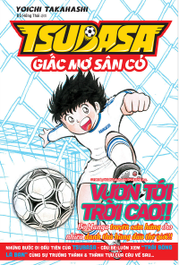
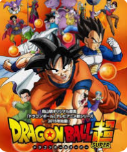
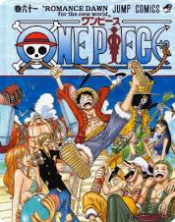

Bìa sách: 
Mô tả: Tsubasa là một bộ truyện tranh nổi tiếng của tác giả Takahashi Yoichi nói về hành trình chinh phục ước mơ bóng đá của mình
Tác giả: Takahashi Yoichi
Bìa sách: 
Mô tả: Dragon Ball là một bộ truyện tranh nổi tiếng của tác giả Akira Toriyama kể về cuộc phiêu lưu của cậu bé Goku từ khi còn nhỏ đến khi trưởng thành và trở thành một trong những chiến binh mạnh nhất vũ trụ
Tác giả: Akira Toriyama
Bìa sách: 
Mô tả: One Piece là một bộ truyện tranh nổi tiếng của tác giả Eiichiro Oda kể về cuộc hành trình của cướp biển Mũ Rơm và đồng đội tìm kiếm kho báu huyền thoại One Piece
Tác giả: Eiichiro Oda